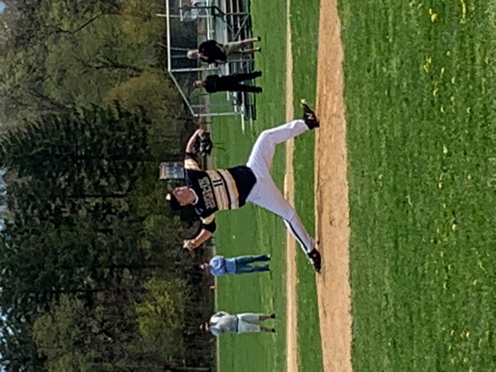
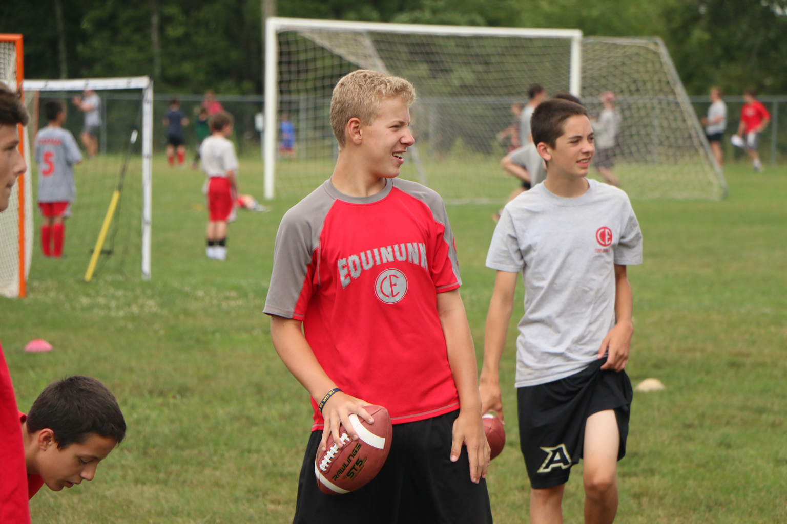
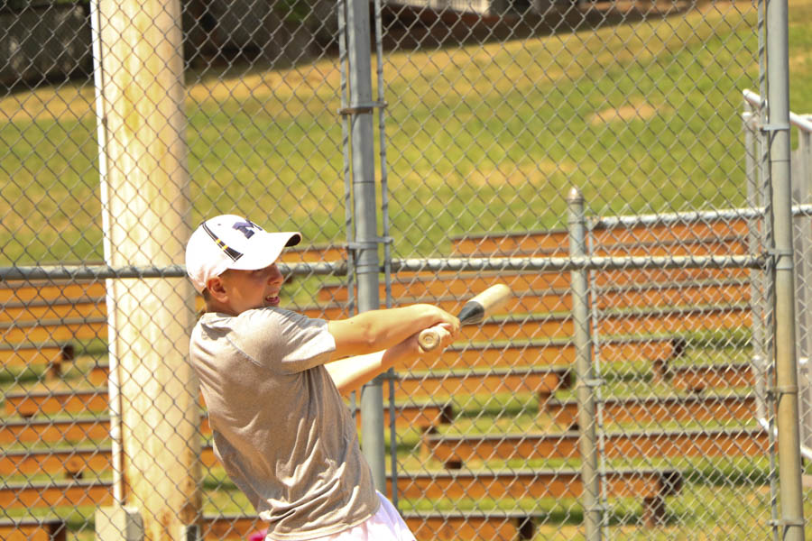
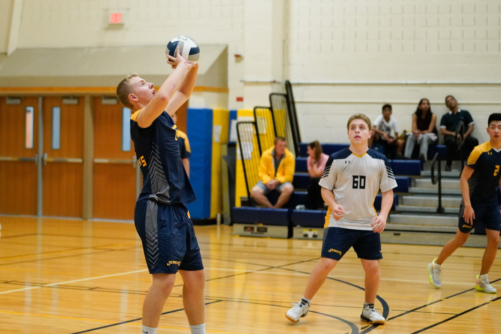
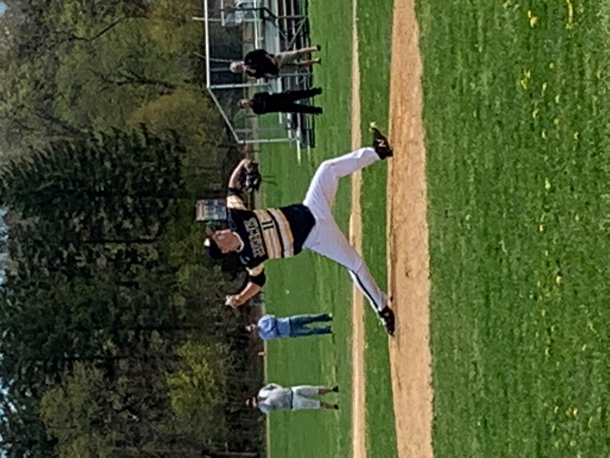
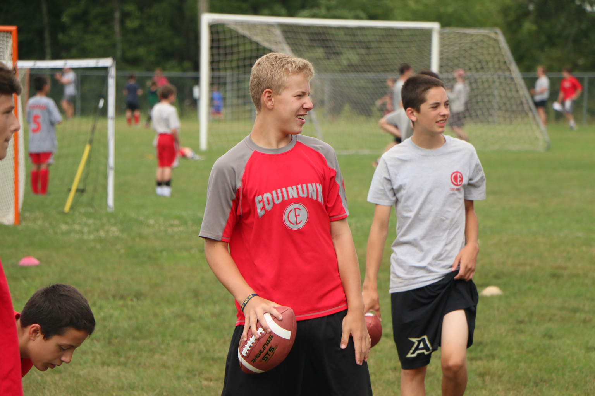
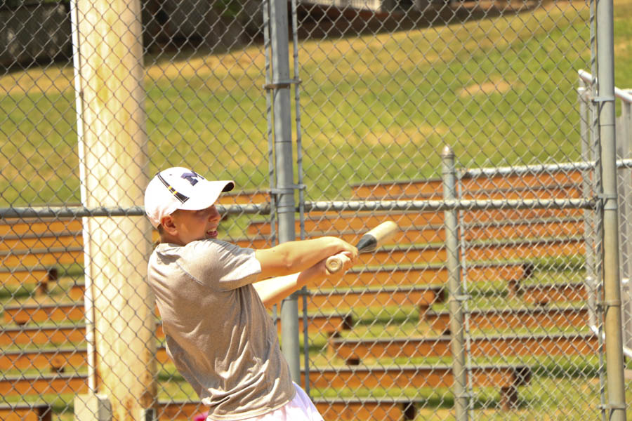
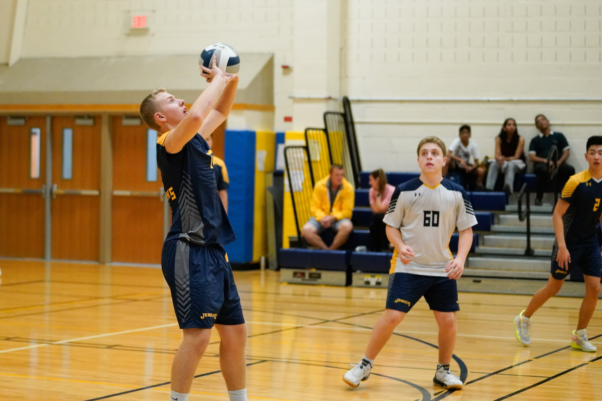

My true passion for sports has molded me into the person I am today. Sports have given me amazing opportunities throughout my childhood and now by bonding with others when watching sports, playing sports, or rooting for our favorite teams. As a young boy, I wasn't the most atheltic and skilled player out on the field/court, but my Dad would spend hours with me at whichever sport I was playing at the time to improve and give myself more confidence. Whether it was my true favorite of baseball, or basketball, or lacrosse, I learned about working hard to put effort in so that I can reach my potential. That work ethic I grew to have also found its way into my academic life. As I got older and played various sports, there was one main one that stood out to me above the rest: baseball. Starting in Little League and playing until I was a starting pitcher on my high school's varsity team, baseball is everything to me. I was born to be a pitcher, and there hasn't been another activity that I was more infatuated with than pitching in a baseball game.
 







On top of my true beloved Michigan Wolverines, I am an avid Mets, Jets, and Islanders fan. Passed down from my Dad to me and his Dad to him, the love (and sometimes hate) for our favorite teams takes up our lives during the seasons they play. I have extremely fond memories of standing out in the gorgeous son to spend the afternoon watching a game with people I love. It has always been a much needed escape from reality for a few hours that I continue to enjoy. Being able to sit and talk sports with anyone is one of my true favorite things to do, and I feel like I can for hours in a sitting.